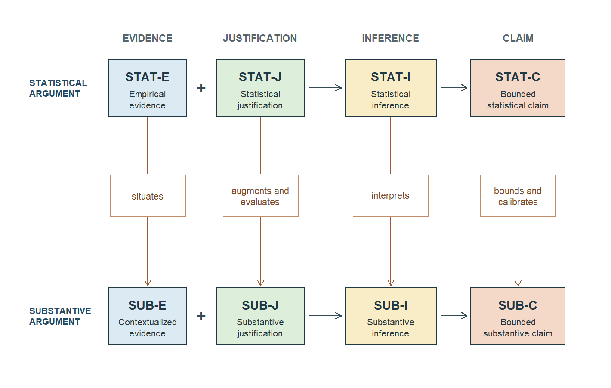
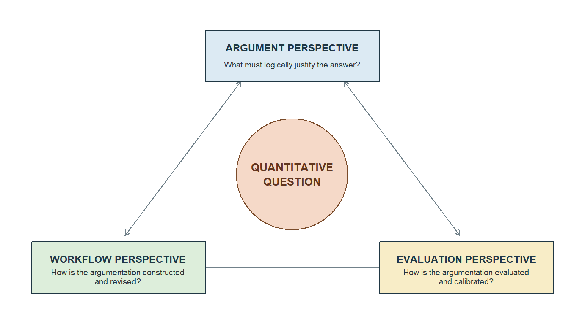
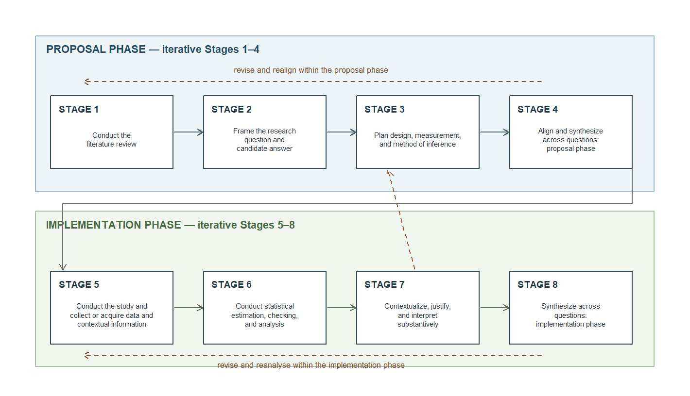

Argument-Based Framework for Quantitative Research
From an Empirical Problem to a Quantitative Research Question
A practical problem must become an answerable question
An educational team asks a seemingly simple question:
Does a study-support program improve learning?
The sentence identifies an empirical problem but not yet a quantitative research question. Learning might mean a final score, delayed retention, course completion, or confidence. Students might mean volunteers, everyone eligible at one university, or students in a wider educational system. Improve might request description, association, prediction, or a causal comparison. A statistical procedure cannot settle these choices after the analysis.
A quantitative research question should communicate its central phenomenon or outcome, comparison or relationship, and intended population or scope clearly enough to guide inquiry. The research plan then gives the fuller specification: the unit, variables, setting, period, estimand or predictive target, intended claim type, and analytic status. Separating the research question from this specification prevents precision from turning the question into an unreadable paragraph.
Types of research and quantitative inquiry
Quantitative research is one approach to empirical inquiry. It uses systematically produced numerical observations to describe variation, compare defined groups or conditions, estimate relationships, evaluate predictions, or study interventions. Its strength is not automatic objectivity. Its strength is that units, measurements, comparisons, uncertainty, and decision rules can be made explicit enough to be examined and challenged (Creswell & Creswell, 2018; Kerlinger & Lee, 2000).
Two operations recur. Aggregation converts observations from defined cases into a summary such as a mean, proportion, distribution, or rate. Comparison places summaries or expected outcomes beside one another under a rule stating what is held constant and why the contrast matters. Both operations gain reach by setting aside detail. A defensible analysis must make visible what was gained, what was omitted, and where the resulting answer stops.
Quantitative, qualitative, and mixed-methods inquiry are not a hierarchy of rigour. Qualitative inquiry can examine meaning, process, experience, and context that numerical variables do not represent adequately. Mixed methods connects different forms of evidence when one alone is insufficient. This chapter concerns quantitative inquiry; it does not imply that every worthwhile empirical problem should be converted into variables.
Terms commonly grouped as types of research classify different aspects of an inquiry. Table 1 separates these dimensions so a study is not labelled by its statistical method alone.
| Classification | Examples | What the classification changes |
|---|---|---|
| Approach to evidence | quantitative, qualitative, mixed methods | The form of evidence and the reasoning used to interpret it |
| Intended claim | descriptive, associational, predictive, causal | The target, required support, and strongest defensible answer |
| Analytic status | exploratory, confirmatory | When questions and decision rules are established and how the evidence may be used |
| Study design | observational, randomized, quasi-experimental | How comparisons arise and which interpretations they can support |
| Time structure | cross-sectional, repeated cross-sectional, longitudinal | What change, ordering, persistence, and dependence can be studied |
| Evidence-production method | survey, test, structured observation, administrative record, intervention | How observations and their limitations enter the evidence |
| Statistical method | summaries, tests, ANOVA, regression, generalized regression | How observations become estimates, uncertainty, and bounded statistical claims |
An evidence-production method supplies empirical observations; a study design supports particular comparisons; and a statistical method performs estimation or prediction. None substitutes for the other two. Descriptive work is an intended claim type and can be planned confirmatorily or developed exploratorily.
Argument-Based Framework and Three Perspectives
Two layers of answer require two linked arguments
For a substantive question addressed quantitatively, the framework normally distinguishes:
- an intermediate bounded statistical claim about an estimand or predictive target; and
- a final bounded substantive claim that answers the research question in substantively meaningful terms.
A statistical, computational, or methodological question may appropriately stop at the bounded statistical claim. Component roles are therefore question-relative. For example, evidence about measurement quality can support a later regression question, while a bounded validity claim can itself be the final substantive answer when score interpretation is the research question.
For substantive questions, the statistical argument supports without determining the substantive argument. The two are structurally parallel: in either one, Evidence and Justification jointly support Inference, which supports a bounded Claim. The eight codes name functional roles in two question-specific arguments–not independent arguments, chronological stages, or boxes completed after analysis. A disputed role may itself require a subordinate argument–for example, measurement support for a score interpretation or sensitivity analysis for a missingness assumption–without altering the complete question-level structure.
The statistical argument
Empirical evidence (STAT-E) is the empirical basis to which statistical reasoning is applied. It includes the observations and the information needed to understand how they were produced: who or what was observed, sampling or recruitment, assignment or naturally occurring exposure, measurement and timing, implementation, exclusions, missingness, and dependence. These are records of the study that actually occurred. Coefficients, fitted values, standard errors, confidence intervals, tests, \(R^2\), diagnostics, and sensitivity results are derived through analysis and therefore do not belong in STAT-E.
Statistical justification (STAT-J) explains why the evidence, design, target, model, estimator, and uncertainty procedure can support the intended statistical inference. It identifies the relevant sampling or assignment logic, measurement and recording fidelity, stochastic variation, functional form, independence or dependence, missingness, overlap, reference process, multiplicity, and confirmatory or exploratory status. It is not a ceremonial list of assumptions and does not claim that assumptions have been proved. It states which conditions the inferential move needs, which can be checked, which must be argued, and which require sensitivity analysis.
Statistical inference (STAT-I) is the reasoned application of the justified procedure to the empirical evidence. It makes the estimand or predictive target explicit and includes the estimator or prediction rule, estimate or prediction, uncertainty or performance, model and data checking, sensitivity analysis, multiplicity handling, and analytic status. The estimand is what the study seeks to learn; the estimate is the value obtained. A \(p\)-value or an \(R^2\) may contribute to STAT-I, but neither is by itself an answer about substantive importance, causality, or overall model validity.
Bounded statistical claim (STAT-C) is the intermediate answer supported by the statistical inference. It states what the evidence says about the declared estimand or predictive target while retaining magnitude, direction, scale, uncertainty, model or design conditions, analytic status, sensitivity, and unresolved statistical reservations. A coefficient or significance label alone is not a bounded claim. STAT-C states the estimated direction and magnitude for the declared marginal, conditional, or predictive target and may conclude that the available evidence is inconclusive. Confirmatory or exploratory status is recorded separately; the claim cannot silently change the target or claim type.
The substantive argument
Contextualized empirical evidence (SUB-E) identifies what STAT-E represents in the substantive world. It situates the people or entities, measurements, conditions, setting, implementation, and period relevant to the research question. It asks, for example, what kind of achievement a score records, which students are represented, or what intervention was actually delivered. SUB-E is neither a second body of observations nor a relabelling exercise. It prevents operational measurements from being treated as though their substantive referents were self-evident.
Substantive justification (SUB-J) explains why the contextualized evidence and statistical target bear on the research question. It draws on prior literature, substantive theory, construct and measurement reasoning, design relevance, plausible mechanisms and alternatives, meaningful benchmarks, and population or setting scope. Design appears in both justifications but performs different work: STAT-J asks whether the statistical procedure is supported, whereas SUB-J asks what substantive interpretation and scope that design can sustain.
Substantive inference and interpretation (SUB-I) reasons from STAT-I using SUB-E and SUB-J. It translates magnitude and uncertainty into substantive units and contrasts, evaluates practical or theoretical relevance, considers alternatives, and identifies whether the supported meaning is descriptive, associational, predictive, or causal. The same three-point estimate can be negligible on one scale, consequential near an educational threshold, or important in a setting with few feasible alternatives. Context changes meaning; it cannot erase uncertainty.
Bounded substantive claim (SUB-C) is the strongest defensible answer to the research question. It states whom or what the answer concerns, in which setting and period, the supported relationship or contrast, magnitude and uncertainty where relevant, assumptions, plausible alternatives, and limits on causal or population generalization. It follows from SUB-I and remains constrained by STAT-C. It may answer positively or negatively or state that the available evidence is inconclusive. Confirmatory or exploratory status is reported alongside, rather than substituted for, that answer. SUB-C is the eventual answer, not the prospective hypothesis.
Across both arguments, Evidence and Justification are co-premises: evidence without justification is not yet inferential, while justification without evidence has nothing empirical to support. STAT-E and STAT-J support STAT-I, which supports STAT-C; SUB-E and SUB-J support SUB-I, which supports SUB-C. Limitations in a logical prior remain relevant downstream. Table 4 provides a compact reference after the full definitions.
| Code | Full name | Logical role |
|---|---|---|
| STAT-E | Empirical evidence | Co-premise with STAT-J for STAT-I. |
| STAT-J | Statistical justification | Co-premise with STAT-E for STAT-I. |
| STAT-I | Statistical inference | Supported by STAT-E and STAT-J; supports STAT-C. |
| STAT-C | Bounded statistical claim | Supported by STAT-I; constrains the final answer. |
| SUB-E | Contextualized empirical evidence | Co-premise with SUB-J for SUB-I; situates STAT-E. |
| SUB-J | Substantive justification | Co-premise with SUB-E for SUB-I; augments and evaluates STAT-J. |
| SUB-I | Substantive inference and interpretation | Supported by SUB-E and SUB-J; interprets STAT-I and supports SUB-C. |
| SUB-C | Bounded substantive claim | Supported by SUB-I; bounded and calibrated by STAT-C. |
Figure 1 shows the logical support within each argument and the four corresponding relations between them; it is not a chronological workflow.
Statistical-to-substantive transition and traceability
Replacing a variable name with a disciplinary label does not make a statistical argument substantive. Each substantive role develops its statistical counterpart while retaining consequential constraints, but the four operations differ: STAT-E → SUB-E situates, STAT-J → SUB-J augments and evaluates, STAT-I → SUB-I interprets, and STAT-C → SUB-C bounds and calibrates. Table 5 states what each operation adds, what must remain visible, and the failure it prevents.
| Shared role | Statistical-to-substantive transition | What must remain traceable | A common failure |
|---|---|---|---|
| Evidence — situates | SUB-E situates STAT-E by identifying what the observed people or entities, variables, conditions, setting, implementation, and period represent substantively. |
How the evidence was produced, the actual unit and population represented, measurement boundaries, timing, participation, and missingness. | Renaming a score as a construct, or an occupational average as an individual characteristic, without support. |
| Justification — augments and evaluates | SUB-J retains the design and statistical conditions in STAT-J while adding and appraising literature, theory, measurement meaning, design relevance, alternatives, benchmarks, and scope. |
Conditions needed for valid statistical inference and the limits of the design-supported claim type. | Treating a plausible theory or adjusted model as a repair for weak comparison, measurement, or identification. |
| Inference — interprets | SUB-I uses SUB-E and SUB-J to interpret the estimate or prediction, uncertainty, checking, and sensitivity in STAT-I in substantive units and context. |
Magnitude, direction, uncertainty, analytic status, checks, and consequential sensitivity results. | Translating only the point estimate, or equating statistical significance with importance or causality. |
| Claim — bounds and calibrates | SUB-C answers the question through SUB-I; STAT-C constrains how strong, certain, and broad that answer may be. |
Target, uncertainty, assumptions, sensitivity, population and setting, and the supported descriptive, associational, predictive, or causal scope. | Producing a broader substantive answer than the statistical claim and design support allow. |
These dependencies can be stated compactly: SUB-E situates STAT-E; SUB-J augments and evaluates STAT-J; SUB-I is supported by SUB-E and SUB-J while interpreting STAT-I; and SUB-C is supported by SUB-I while remaining constrained by STAT-C. Transition fidelity asks whether all relevant magnitudes, uncertainty, assumptions, analytic status, and reservations survive as statistical results acquire substantive meaning.
The framework is Toulmin-informed, not a one-to-one recoding of Toulmin’s six roles. Toulmin distinguishes grounds, claim, warrant, backing, qualifier, and rebuttal (Toulmin, 2003). The framework retains the central insight that evidence does not entail an empirical answer without justified reasoning and that the answer’s force must reflect conditions and reservations. Empirical evidence supplies grounds; justification and inference perform parts of the warrant-and-backing work; uncertainty calibrates force; and bounded claims state reservations. The framework also develops LeMire’s distinction between statistical-parameter and substantive-construct arguments beyond null hypothesis significance testing (LeMire, 2010).
Three perspectives keep the quantitative question at the centre
The same framework can be viewed from three coordinated perspectives:
- Argument: What must logically justify the answer?
- Workflow: How is the argumentation constructed and revised through the research process?
- Evaluation: How is the argumentation evaluated and calibrated?

Figure 2 keeps the quantitative question at the centre. Argument exposes the support needed for an answer, Workflow constructs and revises it, and Evaluation can redirect the workflow or narrow the answer. For several questions, apply all three perspectives to each question while referencing genuinely shared evidence and support rather than repeating them.
Workflow perspective: constructing and revising the arguments
The workflow has an iterative proposal phase (Stages 1–4) and an iterative implementation phase (Stages 5–8). The labels below are activities, not component names. A stage can contribute to several components, and later evidence can require a disciplined return to earlier work.
Table 6 defines the eight activities; Figure 3 then shows their phase structure and routes for revision.
| Stage | Activity | Main contribution |
|---|---|---|
| 1 | Conduct the literature review | Develop prospective STAT-J and SUB-J; clarify the problem, prior evidence, theory, and method. |
| 2 | Frame the research question and candidate answer | State the research question, fuller specification, and optional hypothesis. |
| 3 | Plan design, measurement, and method of inference | Specify required evidence, target, assumptions, checking, sensitivity, and uncertainty. |
| 4 | Align and synthesize across questions: proposal phase | Align priorities, shared resources, distinct targets, compatible designs, and planned multiplicity handling. |
| 5 | Conduct the study and collect or acquire data and contextual information | Produce STAT-E, examine prospective support, and record information needed to situate SUB-E. |
| 6 | Conduct statistical estimation, checking, and analysis | Develop STAT-I and produce a bounded STAT-C. |
| 7 | Contextualize, justify, and interpret substantively | Develop SUB-E, re-evaluate SUB-J, interpret STAT-I in SUB-I, and produce SUB-C. |
| 8 | Synthesize across questions: implementation phase | Give each question an explicit answer outcome and integrate claims while preserving reservations. |

For one question, Stage 4 is a question–design–method coherence check and Stage 8 is its final synthesis. With several questions, the two synthesis stages also address priorities, shared evidence, distinct estimands, multiplicity, and tensions among answers. The workflow is operationally iterative even though the support relations within each argument are logically ordered.
Evaluation perspective: seven lenses
Evaluation produces a reasoned profile or a revised answer, not a summed score. One decisive failure of evidence, measurement, design, or inference can outweigh several strengths.
- Question alignment. Are the question, fuller specification, target, design, method, and intended claim aligned?
- Evidence integrity. What constitutes
STAT-E, how was it produced, and what do provenance, implementation, missingness, dependence, and processing imply? - Justification adequacy. Do design and statistical conditions support the statistical move, and do theory, measurement, and design support the substantive move?
- Inferential adequacy. Are target, procedure, checking, sensitivity, uncertainty, multiplicity, and analytic status defensible?
- Transition fidelity. Do the four relations situate, augment and evaluate, interpret, and bound and calibrate without losing relevant constraints?
- Claim calibration. Are
STAT-CandSUB-Cno stronger than evidence, design, uncertainty, assumptions, alternatives, and generalization permit? - Cross-question coherence. Does every question receive a distinct answer outcome, with shared resources and study-level synthesis transparent?
These lenses are many-to-many. For example, a questionable measure can weaken Evidence integrity, Justification adequacy, Transition fidelity, and Claim calibration at once. The goal is to locate the vulnerable reasoning and repair or bound the answer, not to award points.
First integrated application: an observational baseline-score relationship
The three perspectives can now be applied to one question without turning them into three separate analyses. Consider an educational team that wants to know whether students’ entry preparation is related to subsequent performance. The team plans a prospective observational study in one first-year quantitative-methods course. In the first teaching week, students complete a 0–100 quantitative-reasoning assessment; after the common twelve-week course, they complete a 0–100 end-of-term assessment. The analysis concerns the 310 course completers who completed both assessments. No study condition is assigned, and the assessments are scored under the same documented procedure.
Research question.
Among first-year students completing a quantitative-methods course, how is end-of-term performance related linearly to baseline quantitative-reasoning score?
Prospective hypothesis. Before end-of-term scores are examined, the team expects the working-population slope to be positive: students with higher baseline scores will tend to have higher mean end-of-term scores.
The research specification identifies students as the unit, course completers in the same institution and intake as the working superpopulation, the two assessments as observable variables, and a linear conditional-mean slope as the estimand. The intended answer is associational. The question, hypothesis, model, outcome, and focal interval were specified before the end-of-term evidence was examined, so this focal analysis is confirmatory. The specification prevents the population, target, and claim type from being reconstructed after seeing the result.
Let \(Y\) be the end-of-term score and \(X\) the baseline score. A working model is
\[ E(Y\mid X)=\beta_0+\beta_1(X-50). \]
Here \(\beta_1\) is the expected course-score difference associated with a one-point baseline difference in that working superpopulation. It is not merely the observed-sample slope, a target for all entrants, or the effect of an intervention that raises baseline preparation. Suppose the estimate is 0.42 course points per baseline point, with a 95% confidence interval from 0.30 to 0.54.
At this first application, the interval shows how uncertainty travels through both arguments. Sections 3 and 4 develop its conditions; here, the central boundary is that completers do not automatically represent all entrants.
Argument perspective: construct both bounded answers
The Argument perspective makes the two layers of answer inspectable. Entries draw on the study context and specification above rather than functioning as isolated labels. Table 7 records both layers for the same question.
| Code | Entry for the baseline-score question |
|---|---|
| STAT-E | Baseline and end-of-term scores for 310 course completers, with recruitment, assessment timing, scoring, completion, and study-period information. |
| STAT-J | The prospectively specified working-superpopulation model, consistent assessment procedures, complete outcomes for the analyzed cases, and appropriately independent student information support the slope interval over the represented score range. |
| STAT-I | The confirmatory slope estimate is 0.42, 95% CI [0.30, 0.54], per baseline point. |
| STAT-C | For the defined working superpopulation and model, the confirmatory slope is estimated as 0.42 course points per baseline point, 95% CI [0.30, 0.54]. |
| SUB-E | The evidence concerns students completing one first-year quantitative-methods course and two 0–100 assessments of quantitative performance in one institution and intake. |
| SUB-J | The assessments support a bounded achievement interpretation, but selection into completion and the observational design do not support an intervention effect or broad population generalization. |
| SUB-I | A ten-point baseline difference corresponds to an estimated 4.2-point difference in expected course performance, 95% CI [3.0, 5.4]. |
| SUB-C | Among course completers represented by the model, a ten-point higher baseline score was associated with an estimated 4.2-point higher expected course score, 95% CI [3.0, 5.4]; this confirmatory association does not show what changing preparation would cause. |
The two claims preserve the same estimate and uncertainty, but only the substantive claim supplies the meaningful contrast and educational scope.
Workflow perspective: show how the answer was constructed and revised
Table 8 traces the same question through eight stages and shows how a later problem can reopen an earlier decision.
| Stage | Application to the baseline-score question |
|---|---|
| 1. Conduct the literature review | Examine prior evidence on entry preparation, later course learning, score interpretation, completion, and plausible nonlinear relationships. |
| 2. Frame the research question and candidate answer | State one associational question and prospectively record the expected positive slope. |
| 3. Plan design, measurement, and method of inference | Define the working superpopulation, student unit, assessment timing and scales, slope estimand, linear model, interval, and planned checks. |
| 4. Align and synthesize across questions: proposal phase | Verify that the completer population, assessments, linear estimand, and noncausal interpretation address the same question. |
| 5. Conduct the study and collect or acquire data and contextual information | Administer both assessments and document participation, course completion, timing, scoring, and the common instructional setting. |
| 6. Conduct statistical estimation, checking, and analysis | Estimate the slope and interval; examine whether the linear summary and uncertainty procedure remain appropriate over the represented range. |
| 7. Contextualize, justify, and interpret substantively | Translate the slope to a ten-point contrast, evaluate what the assessments represent, and distinguish association from an intervention effect. |
| 8. Synthesize across questions: implementation phase | State the bounded answer for this question and keep any prediction, subgroup, or causal question separate. |
During proposal piloting, the team notices that the initial baseline assessment has too few difficult items and may compress differences among well-prepared students. The workflow returns from Stage 3 to Stages 1 and 2: the team reviews the intended interpretation, revises the assessment before the focal study, and checks again that the question, score, and slope target agree. This is a substantive measurement revision, not a post-result search for a more favorable coefficient. Selection into course completion still remains a boundary on generalization to all entrants.
Evaluation perspective: calibrate rather than score the argument
Table 9 uses the seven lenses as a quality profile rather than seven independent verdicts or a checklist score.
| Lens | Evaluation of the baseline-score argument |
|---|---|
| Question alignment | The slope, working superpopulation, and associational wording agree; a question about all entrants or an intervention would require different evidence and support. |
| Evidence integrity | Assessment timing, scoring, and complete outcomes are documented; selection into course completion still determines who is represented. |
| Justification adequacy | The model and observational design can support an associational slope under stated conditions; they cannot by themselves support causality or transport to another institution. |
| Inferential adequacy | The interval is defensible only to the extent that the modelled range, linear summary, independence, measurement, and uncertainty procedure are adequate for the working target. |
| Transition fidelity | The ten-point interpretation preserves the slope, interval, unit, confirmatory status, and completer-only scope rather than translating only the point estimate. |
| Claim calibration | “Students with higher baseline scores tended to perform better” is supportable with the stated bounds; “raising preparation will improve performance” is not. |
| Cross-question coherence | This answer does not settle prediction, mechanism, subgroup differences, or intervention effects; each would require a distinct target and argument. |
The result is a bounded positive association for represented course completers; Workflow explains its construction, and Evaluation explains its limits.
Defining the Question and Producing Responsible Empirical Evidence
The inferential machinery can be correct and the empirical answer can still be poor if the observations do not represent the question. Evidence is therefore not a neutral input handed to a method. It is a record of who or what was observed, how the observations were produced, which comparisons the design created, and which parts of the intended population are absent. These features enter STAT-E; their adequacy for the statistical target is argued in STAT-J; and their substantive meaning is developed in SUB-E and SUB-J.
A useful discipline is to ask what would remain true if the numerical result were hidden. The population, unit, measurements, timing, assignment or selection mechanism, and inclusion conditions should still be describable. If they become visible only after a coefficient is reported, the question has probably been allowed to follow the available observations rather than guide their interpretation.
Population, unit, case, and observation
The target population is the set of entities, settings, or occasions to which the intended answer refers. The sampling frame is the reachable set from which participation can arise. The analytic sample contains the cases that contribute to the stated analysis. These sets need not coincide.
The target can be finite and concrete, such as all students enrolled in one district during one academic year, or it can be a working superpopulation: a conceptual population of comparable cases generated under a stated set of conditions. The latter supports model-based inference beyond the observed cases only to the extent that the generating conditions and model assumptions are defensible. Calling a target a superpopulation does not make a convenience sample representative; it makes the intended extrapolation and its conditions explicit.
The unit is the entity about which the question is asked: a student, classroom, school, occupation, district, or occasion. A case is one represented unit under a stated organization of the evidence. An observation is a recorded value for a case at a particular occasion or condition. Repeated measures therefore create several observations for one student rather than several independent students. Naming these distinctions prevents a model from treating design structure as a technical afterthought.
Four distinctions are especially consequential and are summarized in Table 10.
| Question feature | What must be stated | Why the eventual claim changes |
|---|---|---|
| Population, setting, and period | Who or what is represented, where, and when | A relationship in one institution and period need not hold in another. |
| Unit and level | Whether the question concerns people, classrooms, schools, occupations, occasions, or another entity | The same numerical pattern can have a different meaning at another level. |
| Participation and inclusion | How eligible cases entered and which contributed to the analysis | Selection can narrow the represented population and change the relationship being estimated. |
| Observation occasion | When and under what condition each measurement was made | Ordering, repeated measurement, attrition, and intervention exposure affect interpretation and dependence. |
The unit about which an answer is made need not equal the unit of assignment, measurement, or analysis. A school may be assigned to an intervention, students may be measured, and the outcome may be analysed at either level. The design then induces dependence among students in the same school. Treating those students as if each had been independently assigned would change the supported uncertainty and, potentially, the target itself.
Levels of analysis constrain interpretation
Relationships at one level do not automatically describe another. A positive association between occupation-average education and occupation-average income does not estimate an individual’s return to another year of schooling. A school-level relationship between average study time and average achievement need not describe students within schools. This is an ecological boundary: the level represented by the evidence must match the level named in the claim.
The reverse error is also possible. A relationship among students within schools does not establish that schools with higher averages will differ in the same way. Aggregation changes the weighting of observations, removes within-group variation, and can alter the direction of an association. Contextual and compositional explanations must therefore be distinguished: a school-level relationship may reflect school conditions, the composition of students, or both.
Multilevel questions require multilevel methods, but the logical requirement comes first. The question should name the relevant level, and the eventual claim must stay there unless further design and modelling support a cross-level interpretation. The present regression-based approach concentrates on settings where the principal unit and dependence structure can be represented without a full multilevel model. Recognizing when that boundary is crossed is part of rigorous analysis, not a failure to fit a more elaborate model.
Estimands and predictive targets make questions precise
An estimand is the population or model quantity the question asks us to learn: a mean, proportion, difference, slope, odds ratio, rate ratio, or another well-defined contrast. A predictive target specifies what will be predicted, for whom, at what decision time, and how performance will be evaluated.
An estimand connects the verbal question to a mathematical target. Consider a working superpopulation of pairs \((X,Y)\). If the intended relationship is a linear projection, the target can be defined even when the conditional mean is not exactly linear:
\[ (\alpha^*,\beta^*)= \arg\min_{a,b}E\{(Y-a-bX)^2\}. \]
The slope \(\beta^*\) is then the best linear summary for that population and the represented distribution of \(X\). Under the stronger conditional-mean model \(E(Y\mid X)=\beta_0+\beta_1X\), \(\beta_1\) is also the expected outcome difference per unit of \(X\). These interpretations are related but not identical. Stating the intended model target prevents a convenient equation from silently receiving a stronger meaning.
The estimand is not the estimate. A slope is a target quantity; its fitted value is an estimate. A population pass rate is a target quantity; the sample proportion estimates it. Keeping target and estimate separate prevents a particular result from quietly redefining the question.
The estimator is the rule that maps possible samples into estimates. The estimate is the value obtained in the observed study. Uncertainty describes how estimates or predictions would vary under a stated stochastic or design-based reference process. A confidence interval therefore has no free-standing meaning: its interpretation depends on the estimand, estimator, sampling or model process, and assumptions used to justify its coverage.
The same variables can support different estimands. Table 11 contrasts several common targets and the claims they do not establish by themselves. A marginal slope describes an average relationship without adjustment. A conditional slope describes a relationship holding specified variables constant under a model. These are different questions rather than rival estimates of one universal effect.
| Question form | Illustrative target | What the target does not establish by itself |
|---|---|---|
| What is the level or prevalence? | A mean, proportion, quantile, or rate in a defined population and period | Why that level occurred or how it would change under intervention |
| How do represented groups differ? | A marginal mean, proportion, or rate contrast | Exchangeability of the groups or a causal effect |
| How is an outcome related to an explanatory variable? | A marginal or conditional slope or contrast | That changing the explanatory variable will change the outcome |
| What would differ under assigned conditions? | A design-supported causal contrast for the represented population | Generalization beyond the assignment, implementation, setting, or outcome |
| How well can future outcomes be predicted? | Expected out-of-sample loss, calibration, discrimination, or prediction-interval coverage | Explanation, causality, or useful performance in a different deployment population |
A predictive target is not merely a regression coefficient. It must identify the future cases, prediction time, information available at that time, outcome horizon, and criterion for success. A model can estimate an associational slope precisely yet predict new cases poorly, or predict accurately without providing a defensible explanation. Prediction and explanation can coexist in one study, but they require separate questions, targets, and evaluations.
Variable roles come from the question
An outcome is the variable whose distribution, expectation, or prediction is being studied. Explanatory variables, conditions, moderators, adjustment variables, and identifiers serve different roles. Those roles come from the question and design, not from whether a variable is numerical or categorical.
An adjustment variable needs a rationale. It might improve precision in a randomized study, represent a prespecified comparison, address a credible alternative explanation in an observational study, or support prediction at a defined decision time. Adding variables automatically can change the estimand, introduce bias, hide overlap problems, or make a claim impossible to explain.
The same recorded characteristic can have different roles in different questions. Baseline achievement may be the focal explanatory variable in one question, a precision variable in a randomized comparison, a moderator in an interaction question, or an input available at the time of prediction. These roles determine which coefficient or contrast is relevant and what support is needed. They should not be inferred from the order in which variables happen to appear in an equation.
Scale is also part of the target. A one-unit change in age measured in years is not the same contrast as a one-standard-deviation change. A logarithm represents multiplicative rather than additive differences. Centering can make an intercept or lower-order coefficient easier to interpret without changing the fitted relationship. Every transformation should therefore be justified by the question, substantive scale, and model—not solely by a diagnostic or a desire for a small \(p\)-value.
Evidence-production methods shape what the evidence means
Surveys, tests, administrative systems, sensors, structured observations, and interventions create different evidence. A score depends on its instrument, administration, scoring, and timing. A participation indicator depends on how participation was defined and recorded. Administrative observations may have broad coverage yet reflect rules designed for service delivery rather than research.
Evidence quality has several dimensions that should not be collapsed into a single label, and Table 12 shows why their importance varies across sources. Coverage concerns which intended cases can appear. Comparability concerns whether observations have the same meaning across groups, conditions, and periods. Timing concerns whether explanatory information precedes the outcome and whether follow-up is long enough for the phenomenon. Implementation concerns whether assigned or described conditions were actually realized. Measurement quality concerns the precision and interpretation of recorded quantities. A large sample can reduce sampling variation while leaving each of these limitations intact.
| Evidence source | What it can represent well | What remains a substantive question |
|---|---|---|
| Survey response | Reported perceptions, intentions, or behaviour under stated questions | Recall, interpretation, response process, and nonresponse |
| Assessment | Performance in a defined domain under stated administration and scoring | Whether the performance supports the intended educational interpretation |
| Administrative record | Institutionally recorded events, often with broad coverage | Whether institutional definitions match the research concept |
| Structured observation | Behaviour under a specified observation and coding protocol | Reactivity, observer variation, and contextual scope |
| Intervention record | Assignment, exposure, implementation, and adherence | Which version of the intervention was delivered and to whom |
STAT-E therefore includes the observations and information needed to understand how they arose. Estimates, standard errors, confidence intervals, significance tests, and diagnostics belong to STAT-I; moving them into Evidence would conceal the inferential step that produced them.
This separation also clarifies why preparation cannot be judged only operationally. Recoding an outcome, excluding an implausible value, or combining response categories changes what is represented in STAT-E and can change the estimand. The later R chapters provide practical tools, but the principle comes first: every consequential transformation should preserve a traceable connection from the research question to the bounded claim.
From observable variables to latent variables
An observable variable is directly recorded under an operational rule, such as test score, age, attendance count, or assigned condition. Its interpretation still depends on measurement quality, but the recorded value is available for analysis.
Directly recorded does not mean error-free or theoretically transparent. A test score can vary because of item sampling, administration, scoring, language, or motivation. Attendance recorded by a learning platform may represent login activity rather than engaged study. Reliability concerns consistency under a stated measurement process; validity concerns whether a proposed interpretation and use are supported. Neither follows merely because a value is numerical.
A latent variable is an unobserved construct—such as anxiety, belonging, or self-efficacy—inferred from several indicators and a measurement model. A single item can be used as an observable proxy, but it should not be treated as the construct without qualification.
An operational definition specifies how an observable variable was produced and what it is intended to represent. It connects the substantive idea to the evidence without proving equivalence. When a construct is complex, the substantive claim should either remain explicitly about the observed score or draw on separate measurement evidence. This distinction protects the statistical argument from being asked to validate a construct that its model only treats as a number.
This volume concentrates on regression with observable variables. Questions about latent structures require factor analysis or latent-variable modelling and a different analytical framework. Regression can use a defensibly created score, but it does not by itself establish that the score measures the intended construct.
Missingness is part of the evidence-generating process
Missing observations can reflect absence, nonresponse, attrition, instrument failure, skip patterns, or exclusion decisions. The relevant questions are not only how much is missing but whose information is missing, when it became missing, and whether the process is related to observed or unobserved values.
Let \(R=1\) indicate that an intended outcome \(Y\) is observed and let \(X\) denote specified observed information. A common working form of the missing at random condition is
\[ P(R=1\mid Y,X)=P(R=1\mid X). \]
The equality says that, after conditioning on the included information, the unobserved outcome provides no additional explanation of whether it is observed. It does not say that missingness is random in everyday language, and it does not follow from a nonsignificant comparison of respondents and nonrespondents.
The assumption that information is missing at random is conditional: after accounting for specified observed variables, the probability of missingness does not depend on the missing value itself. It is not directly testable from the observed evidence. A method such as multiple imputation can be appropriate under that assumption, but the resulting claim should be compared with plausible sensitivity scenarios when departures could matter.
Complete-case analysis sometimes estimates the intended regression target under stronger conditions, but it can also change the represented population and lose precision. Multiple imputation or likelihood-based methods can use partially observed information when their models and missingness conditions match the target. No method recovers information by command: the justification must state which condition is being invoked and why it is plausible.
Selection into a study and missingness after entry are related but distinct. Restricting a question to course completers can make their association the legitimate target, yet it does not support generalization to all entrants. Missing outcomes among those completers create an additional inferential problem. Keeping the two boundaries separate prevents a missing-data method from being presented as a remedy for nonrepresentative participation.
Missingness can alter STAT-E, weaken STAT-J, change STAT-I, and narrow both claims. A complete analysis therefore states the missingness pattern, the working assumption, the method linked to that assumption, and the sensitivity of the answer.
Sensitivity analysis is most informative when it varies a scientifically meaningful departure: for example, how much lower the unobserved outcomes would need to be for the bounded answer to change. The purpose is not to produce a second preferred result. It is to reveal which unobserved differences the claim can withstand and to carry that fragility into STAT-C and SUB-C.
Research Design and the Claims It Can Support
Research design is the reasoning that makes an observed comparison informative; it is not merely a label attached to a methods section. Design supplies at least three distinguishable forms of support: representation of a population, comparability of groups or conditions, and credible measurement and timing. A study can be strong on one dimension and weak on another. Statistical modelling can express a design-supported comparison and sometimes improve precision, but it cannot manufacture representativeness, randomization, temporal ordering, or implementation fidelity (Shadish et al., 2002).
Design affects both argument layers. Sampling, assignment, timing, and observation enter STAT-E; the conditions under which they justify an estimand enter STAT-J. SUB-E states what those design features mean in the study setting, and SUB-J evaluates whether the resulting comparison bears on the substantive question. A design name alone cannot perform that work.
The sampling funnel separates populations often collapsed
A useful sequence is:
\[ \text{target population} \supseteq \text{sampling frame} \supseteq \text{invited sample} \supseteq \text{participants} \supseteq \text{analytic sample}. \]
The display is an idealized inclusion sequence. In practice, a sampling frame may omit eligible population members or include ineligible ones; this is coverage error rather than a harmless administrative detail. Participation and analysis can create further selection. The inferential question is therefore not simply whether the final sample is large, but whether each transition preserves the population and contrasts named in the question.
Each narrowing step can change who is represented. Probability sampling gives known selection probabilities from a defined frame and supports design-based generalization to that frame under appropriate participation and measurement. Convenience participation does not make analysis worthless, but it demands a narrower answer and explicit comparison with the intended population.
Population generalization can be supported in more than one way, but each way needs an argument. Probability sampling uses known selection probabilities. Model-based generalization specifies a working superpopulation and conditions under which represented cases are treated as exchangeable with future or unobserved cases. Transport to another setting requires evidence that effect or relationship modifiers are adequately represented. None follows merely from a small standard error.
Random sampling and random assignment answer different questions
Random sampling concerns who enters from a population and mainly supports population generalization. Random assignment concerns which study condition participants receive and mainly supports causal comparison within the study. One does not imply the other.
A randomized experiment with volunteers can support a strong assignment-based comparison for represented participants while leaving wider generalization uncertain. A probability sample without random assignment can represent a population well while leaving causal interpretation unsupported. The final claim should distinguish these two dimensions. Table 13 combines them without treating either as a substitute for the other.
| Selection and assignment | Primary support | Boundary that remains |
|---|---|---|
| Probability selection and random assignment | Potentially both population inference and an assignment-based causal comparison | Participation, measurement, implementation, attrition, interference, and the represented period |
| Nonprobability participation and random assignment | An assignment-based comparison for the study participants | Extension beyond those participants requires additional support |
| Probability selection without random assignment | Population description or association | Sampling alone does not remove alternative explanations |
| Neither probability selection nor random assignment | Bounded description, association, or prediction for represented cases | Wider generalization and causal interpretation both require additional justification |
Random assignment most directly supports a comparison of assigned conditions. Nonadherence, crossover, and incomplete implementation can make that target differ from the effect of actually receiving a treatment. Changing the analysis to compare recipients rather than assigned groups generally loses the original randomization support. The research question, intervention record, and eventual claim must therefore agree on which contrast is being answered.
Observational, experimental, and quasi-experimental designs
In an observational design, conditions arise without researcher assignment. Such studies can support description, association, and prediction. A causal interpretation requires additional assumptions and evidence about selection, timing, measurement, confounding, and plausible alternatives; regression adjustment alone does not create those conditions.
Observational does not mean unplanned. A prospective cohort can specify eligibility, measurement times, focal exposures, outcomes, adjustment variables, and analysis before outcomes are observed. A cross-sectional survey can use a probability design and careful measurement. These features strengthen representation and temporal clarity even though they do not reproduce random assignment. Conversely, a large retrospective database can provide weak support if variable meanings, inclusion, and timing are unclear.
In a randomized experimental design, assignment is governed by chance. Randomization supports a causal comparison of assigned conditions when implementation, outcome observation, interference, and analysis are handled appropriately. Factorial experiments randomize combinations of two or more factors and therefore belong within this family.
Randomization balances competing explanations in expectation; it does not guarantee identical observed groups in one realized experiment. Baseline differences should be interpreted in light of the randomization rather than used as a post hoc gatekeeper for whether it “worked.” Precision adjustment can be planned, but the assignment contrast and implementation conditions remain the principal source of causal support.
In a quasi-experimental design, a policy rule, threshold, timing change, or comparison structure approximates an experiment without random assignment. Interrupted time series, regression discontinuity, and carefully designed comparison groups can support stronger causal arguments than ordinary observational comparisons, but each relies on design-specific assumptions and checks.
Table 14 compares the three families before their differences are reduced to a model label. Quasi-experimental does not mean “almost randomized.” A threshold design relies on continuity and absence of manipulation near the threshold; an interrupted time series relies on the plausibility of the counterfactual trend and absence of coincident changes; a comparison-group design relies on the credibility of its trend and selection assumptions. Regression represents each contrast, but the design-specific justification is what gives the coefficient a causal or policy meaning.
| Design family | How the comparison arises | Supports most directly | Central reservations | Role of regression |
|---|---|---|---|---|
| Observational | Conditions arise without researcher assignment | Description, association, and prediction | Selection, timing, confounding, measurement, and overlap | Expresses marginal or conditional comparisons; adjustment alone does not create a causal design |
| Randomized experimental | Chance governs assignment | Effect of assignment within the implemented study | Attrition, adherence, interference, implementation, dependence, and transport | Estimates the designed contrast and can improve precision |
| Quasi-experimental | A threshold, timing, policy, or comparison structure supplies the contrast | A design-specific, often local causal comparison when its assumptions are credible | Manipulation, concurrent changes, continuity or trend assumptions, and spillovers | Encodes the design contrast and uncertainty but cannot replace design-specific justification |
Analysis and modelling support two forms of inference
For applied research, statistical analysis and modelling can be treated as one connected activity: describing evidence, formalizing a target or prediction rule, estimating or predicting, checking, and probing sensitivity. These operations produce results, but they do not by themselves justify what the results estimate or what they mean for the research question.
Statistical inference (STAT-I) is the statistical argument’s inferential component. Supported jointly by STAT-E and STAT-J, it states the estimand or predictive target and brings together the estimate or prediction, uncertainty or performance, checking, sensitivity, multiplicity, and analytic status. It supports but is distinct from the bounded statistical claim STAT-C.
Substantive inference and interpretation (SUB-I) is the corresponding component of the substantive argument. Supported by SUB-E and SUB-J, it interprets STAT-I in substantive units and context, evaluates relevance and alternatives, and supports but remains distinct from SUB-C. Table 15 separates the analytical work from the two inferential roles.
STAT-I and SUB-I perform distinct inferential work.
| Activity or component | Central question | Role in the framework | What it cannot supply by itself |
|---|---|---|---|
| Statistical analysis and modelling | What descriptions, formal models, estimates, predictions, checks, and sensitivities can be produced? | Supplies analytical results used in STAT-I. |
A justified target, reference process, or substantive meaning. |
Statistical inference (STAT-I) |
What does the evidence imply about the declared estimand or predictive target under stated conditions? | Supported by STAT-E and STAT-J; supports STAT-C. |
Practical importance, disciplinary meaning, or broader scope. |
Substantive inference (SUB-I) |
What does STAT-I mean for the research question in its population, setting, theory, and measurement context? |
Supported by SUB-E and SUB-J; supports SUB-C. |
Permission to discard statistical uncertainty or design limits. |
The two inferential components are connected but not interchangeable. Weak measurement or design can narrow substantive meaning even when a statistical calculation is precise, while compelling theory cannot repair an unidentified comparison or mismatched uncertainty procedure. SUB-I may support descriptive, associational, predictive, or causal meaning. Causal inference is neither a third answer layer nor a synonym for substantive inference: the statistical argument must define, identify, and estimate a causal target, while the substantive argument establishes what the intervention, outcome, population, and setting mean before ending in a bounded SUB-C. Adjustment or statistical significance cannot provide the required design or identification support by itself.
Inferential conditions belong to the argument
An inferential condition matters because of the role it plays in the move from evidence to target—not because it appears on a generic checklist. Different methods require different conditions, but the following families recur:
- Target and specification. The estimand or predictive target, modelled population, variable roles, contrast, scale, and functional form must match the question.
- Evidence production and measurement. Sampling or recruitment, assignment or exposure, timing, scoring, implementation, coverage, and operational definitions determine what the evidence can represent.
- Stochastic reference process. A design-based or model-based account must explain the variation to which the standard error, interval, test, or prediction assessment refers.
- Dependence and interference. Independent units, clustered observations, repeated measurements, spatial or temporal dependence, and spillovers require uncertainty and targets that respect the design.
- Selection and missingness. Participation, attrition, exclusions, and unavailable values require explicit conditions, a method compatible with those conditions, and sensitivity when plausible departures could change the claim.
- Analytic conduct. Prespecification, exploratory changes, multiplicity, model selection, and reuse of evidence affect how strongly the result can be calibrated.
- Checking and sensitivity. Diagnostics can reveal incompatibility or fragility, but they cannot prove a model true. Sensitivity analysis should vary scientifically plausible alternatives and carry consequential changes into both claims.
For the classical linear-model intervals used later in this chapter, an explicit model or working-superpopulation estimand is required. Exact small-sample \(t\) inference additionally relies on an appropriate full-rank linear conditional-mean model with independent, conditionally Gaussian errors of constant variance. Other uncertainty procedures replace some of these conditions with different ones; none removes the need to state the target, dependence, missingness, and analytic status. Conditions that cannot be tested fully from the observed evidence—such as missing at random or absence of important unmeasured confounding—must remain conditional and should be examined through substantive reasoning and sensitivity analysis.
Time, clustering, dependence, and interference
Cross-sectional evidence describes a defined period. Repeated cross-sections compare populations at several periods. Longitudinal evidence follows the same units, allowing questions about change and ordering while introducing within-unit dependence and attrition.
Temporal precedence is necessary for many causal interpretations but is not sufficient. Measuring an explanatory variable before an outcome does not rule out prior common causes, anticipatory behaviour, or measurement change. Longitudinal evidence can distinguish stable differences from within-unit change, yet those are different estimands and need not have the same value. Repeated cross-sections can describe population change without following the same people; they cannot be interpreted automatically as individual change.
Students within classrooms, patients within clinics, and repeated observations within people are usually dependent. Standard uncertainty calculations that assume independence can then be miscalibrated and are often too narrow. Clustering belongs in the design description and the inferential plan, not only in a diagnostic after estimation.
Dependence affects more than a standard-error formula. If schools are assigned but students are measured, the number of independently assigned units is closer to the number of schools than the number of students. If repeated observations are analysed, the target may concern change within students, differences between students, or both. The question and model must distinguish those sources of variation before uncertainty is calculated.
Interference occurs when one participant’s condition can affect another’s outcome—for example, when students share retrieval materials. It changes what the intervention comparison means. A design can reduce interference by separating groups or assigning intact clusters; the claim must reflect the design actually implemented.
Interference can also be substantively important rather than merely a nuisance. A classroom program may work partly through peer interaction, making spillover part of the intervention as delivered. The design must then define whether the target is an individual direct effect, a group-level policy effect, or an overall difference between assignment strategies. A familiar regression coefficient does not resolve that choice.
Research documentation supports traceability
Empirical evidence should be accompanied by enough design information to reconstruct who was represented, how observations were produced, and which comparison was intended. The research record should connect the problem, question, hypothesis where present, estimand or predictive target, protocol, and analysis plan to what occurred. It should identify the population and frame, unit and level, eligibility, recruitment or sampling, assignment or exposure mechanism, instruments and scoring, measurement occasions, collection or acquisition procedures, intervention delivery and fidelity, inclusion and exclusion rules, missingness, dependence, interference, contextual information, and any departure from the plan.
The purpose is not to maximize documentation. It is to answer six claim-directed questions:
- Who and what are represented?
- Which outcomes, groups, conditions, or values are being compared?
- How did that comparison arise?
- What was measured, when, and under what implementation?
- Where can dependence, selection, or interference enter?
- Which limitations must remain visible in the final claim?
A prespecified plan links these questions to the estimand, estimator, uncertainty procedure, checking, and sensitivity analysis. Deviations need not invalidate a study, but they change analytic status and can require a narrower claim. An exploratory reanalysis can be valuable when it is identified as such rather than presented as the original confirmatory answer.
This information is not clerical decoration. It supports STAT-J, gives substantive meaning to SUB-E, allows the prospective support in both justifications to be compared with the implemented study, and determines the boundaries of STAT-C and SUB-C. Documentation supports traceability when a reader can reconstruct why each design or analysis decision bears on the research question; its value is not measured by the length of an appendix.
The design-to-analysis relation should therefore run in one direction of justification: the question motivates a comparison; the design creates or reveals that comparison; and the model expresses it. In a randomized study, regression adjustment can improve precision or encode planned stratification. In an observational study, adjustment can make a conditional comparison explicit and examine alternatives. In neither case does a more elaborate model replace the design argument.
Further Applications Through Three Perspectives
A hypothetical randomized retrieval-practice study
A university is deciding whether to replace its standard first-year study support with guided retrieval practice. Prior research suggests that active recall can strengthen delayed access to learned material, but the university needs evidence for its own four-session implementation and has identified a two-point difference on its delayed assessment as potentially important.
Research question. Among the 240 consenting first-year students in this intake, what difference in mean delayed-assessment performance would result from assignment to Retrieval rather than Standard support in this four-session implementation?
Hypothesis. Before observing outcomes, the researchers expect the mean assignment effect for these students, standardized over their baseline-score distribution, to be at least the prespecified two-point importance benchmark.
Table 16 connects the context and question to the evidence, design, measurement, target, and method used in the two arguments.
| Study feature | Specification |
|---|---|
| Population, unit, and setting | The direct study population is 240 consenting first-year students in one university intake; the student is the unit of assignment, measurement, and analysis. Consent occurs before assignment. |
| Design and implementation | Students are assigned individually at random, 120 to Retrieval and 120 to Standard support. Both formats contain four sessions matched in duration and content coverage. Delivery and attendance are recorded, and the primary comparison follows assignment. |
| Variables and measurement | A 0–40 baseline assessment is administered before assignment. A parallel 0–40 delayed assessment is administered two weeks after the fourth session under a common scoring procedure. All 240 delayed outcomes are observed. |
| Target and method | The estimand is the marginal mean assigned-group contrast for Retrieval rather than Standard, standardized over the empirical baseline-score distribution of the 240 consenters. A prespecified additive baseline-adjusted linear model estimates this target; randomization supports its assignment-effect interpretation, and the interval and comparisons with zero and the two-point benchmark are confirmatory. |
| Substantive scope | Randomization can support a causal interpretation of assignment for these students and this implementation if consistency, measurement, follow-up, and interference conditions are adequate. Consent and one setting do not support wider population generalization without additional evidence. |
Let \(Z=1\) denote Retrieval assignment and \(Z=0\) Standard assignment, let \(X_0\) be the baseline score, and define the assigned-group conditional mean \(m_z(x)=E(Y\mid Z=z,X_0=x)\). If \(G\) is the empirical baseline-score distribution of the 240 consenters, the prespecified statistical target is the baseline-standardized marginal assigned-group contrast
\[ \Delta_G=E_{X_0\sim G}\!\left[m_1(X_0)-m_0(X_0)\right]. \]
The prespecified baseline-adjusted regression model is
\[ E(Y\mid Z=z,X_0=x)=\beta_0+\beta_1z+ \beta_2(x-20). \]
Because this additive model contains no assignment-by-baseline interaction, its conditional Retrieval-minus-Standard contrast is the constant \(\beta_1\) at every baseline value. Standardizing both assigned formats over the same target distribution \(G\) therefore gives \(\Delta_G=\beta_1\). Random assignment, well-defined support formats, complete follow-up, consistency, and no material interference support interpreting this assigned-group contrast as an effect of assignment for these students. Thus baseline adjustment is the prespecified estimation method, not a change from the marginal research question. Suppose the estimate of \(\Delta_G\) is 3.1 points with a 95% confidence interval from 0.8 to 5.4.
The inferential conditions now have a defined role. Random assignment supports identification of the primary assignment contrast for these students. The intended interpretation additionally assumes that the two support formats were delivered consistently, the assessment has the stated meaning across groups, and interference is not material. For the displayed classical \(t\) interval to have its exact small-sample model interpretation, the additive linear model must have full rank with independent, conditionally Gaussian errors of constant variance. Complete follow-up removes outcome missingness from this hypothetical example; it does not remove the generalization limit created by consent and one intake. The confirmatory status depends on preserving the prespecified question, estimand, model, outcome, and benchmark. Table 17 then keeps the statistical and substantive arguments distinct while displaying their correspondence.
| Code | Entry for the randomized retrieval-practice question |
|---|---|
| STAT-E | Assignment, baseline and delayed scores, assessment timing and scoring, session delivery, attendance, consent, and complete follow-up information for 240 students. |
| STAT-J | Randomization supports the assigned-group comparison; the no-interaction additive model makes its coefficient equal the marginal contrast standardized to the same baseline distribution in both groups. Consistent delivery, no material interference, complete outcomes, full rank, and independent conditionally Gaussian constant-variance errors support the displayed classical interval. |
| STAT-I | The estimated baseline-standardized marginal Retrieval-minus-Standard assignment contrast is 3.1 points, 95% CI [0.8, 5.4], against a two-point benchmark. |
| STAT-C | For the empirical baseline distribution of these 240 students, the prespecified confirmatory analysis estimates the marginal assignment contrast as 3.1 points, 95% CI [0.8, 5.4]; it is positive, but uncertainty includes values below and above the benchmark. |
| SUB-E | The evidence concerns consenting first-year students assigned to four matched study-support sessions and completing a 0–40 delayed assessment two weeks later in one university intake. |
| SUB-J | Retrieval-practice theory, documented delivery, and randomization support an educational interpretation of assignment; the evidence does not identify the effect of receipt under nonadherence, and consent plus one setting limit generalization. |
| SUB-I | For these 240 consenters’ baseline distribution, the estimated mean assignment effect is 3.1 points on a 40-point delayed assessment, 95% CI [0.8, 5.4]; the interval does not establish that the effect exceeds two points. |
| SUB-C | Under the stated consistency, measurement, follow-up, and interference conditions, assignment to Retrieval rather than Standard is estimated to raise mean delayed performance for these 240 consenting students by 3.1 points, 95% CI [0.8, 5.4]. An effect above two points and extension beyond this intake and implementation remain uncertain. |
The answer outcome is a bounded positive causal answer about assignment for these students in this implementation; the practical benchmark and wider generalization remain unresolved. Each perspective clarifies a different part of that answer.
Argument perspective
The component structure above makes the support chain visible. Assignment and assessment information (STAT-E), together with randomization and model conditions (STAT-J), support the standardized marginal estimate and interval (STAT-I). These support the bounded statistical claim (STAT-C). Across arguments, SUB-E situates the evidence in this educational implementation, SUB-J augments and evaluates the statistical support using retrieval-practice theory and scope, SUB-I interprets the result on the 0–40 assessment, and STAT-C bounds and calibrates SUB-C.
Regression therefore supplies the standardized marginal comparison and uncertainty under the prespecified additive model. Randomization, implementation, measurement, theory, and context determine whether that comparison answers the educational question causally and how far the answer extends.
Workflow perspective
The exact workflow labels identify when the argument is constructed and where revision can occur. Table 18 applies every stage to this question.
| Stage | Application to the randomized retrieval-practice question |
|---|---|
| 1. Conduct the literature review | Examine retrieval-practice evidence, plausible mechanisms, prior assessment effects, and the two-point importance benchmark. |
| 2. Frame the research question and candidate answer | State the marginal assignment question for the 240 consenters and prespecify an effect of at least two points. |
| 3. Plan design, measurement, and method of inference | Define the baseline-standardized marginal estimand; plan random assignment, matched sessions, baseline and delayed measures, the additive no-interaction model, interval estimation, and checks. |
| 4. Align and synthesize across questions: proposal phase | Confirm that the question, target baseline distribution, assignment contrast, coefficient-to-estimand link, outcome, benchmark, and intended causal scope agree. |
| 5. Conduct the study and collect or acquire data and contextual information | Recruit consenting students, randomize formats, deliver the sessions, and observe baseline, delayed performance, and implementation. |
| 6. Conduct statistical estimation, checking, and analysis | Estimate the standardized marginal assignment effect, quantify uncertainty, check additivity and other model conditions, and compare the interval with zero and two points. |
| 7. Contextualize, justify, and interpret substantively | Interpret 3.1 points on the assessment, use theory and design to justify a causal reading, and retain the narrow setting. |
| 8. Synthesize across questions: implementation phase | State the bounded positive answer while preserving uncertainty about the benchmark and wider generalization. |
Iteration remains possible. Unequal session delivery could return the study to Stage 3 to redefine the supported comparison; unexpected curvature in the baseline relationship could return it to Stages 3 and 6 for a prespecified or clearly exploratory sensitivity analysis.
Evaluation perspective
Table 19 evaluates the same argument rather than introducing a new analysis.
| Lens | Concrete evaluation and possible revision |
|---|---|
| Question alignment | The causal wording matches random assignment, and the no-interaction additive model makes \(\beta_1\) equal the marginal contrast standardized to the 240 consenters’ baseline distribution; keep the answer restricted to these students and this implementation. |
| Evidence integrity | Complete outcomes are a strength; examine session fidelity, interference, and assessment consistency before treating assignment as the delivered contrast. |
| Justification adequacy | Randomization, consistent implementation, no material interference, and retrieval-practice theory support the two moves; one setting and consent before assignment weaken generalization. |
| Inferential adequacy | The coefficient targets the declared marginal effect only under the additive no-interaction model and common target baseline distribution; assess baseline nonlinearity and assignment-by-baseline sensitivity, along with the error conditions for the interval. |
| Transition fidelity | The substantive answer retains the baseline-standardized marginal target, 3.1-point magnitude, interval, benchmark, assigned-format meaning, and narrow scope. |
| Claim calibration | The interval supports a positive mean difference but not a gain that necessarily exceeds two points; revise any stronger practical claim. |
| Cross-question coherence | There is one focal question; any mechanism or subgroup question would require a separate argument and explicit multiplicity handling. |
The example integrates the earlier concepts rather than adding a separate method lesson. Section 2 supplies the two argument structures, workflow, and evaluation lenses. Section 3 identifies the student unit, represented population, observable assessments, baseline-standardized marginal assignment estimand, evidence production, and complete follow-up. Section 4 explains why random assignment supports the assignment comparison, why model conditions still matter for the displayed interval, and why causal interpretation and generalization require different support. The 3.1-point result becomes educational evidence only when those pieces are kept together.
A real example: two linked occupational-prestige questions
The public Prestige data support a historical question about how education, economic rewards, and social standing varied across Canadian occupations. They describe 102 occupations using information associated with the 1971 Census and an occupational-prestige study (Fox et al., 2022; Pineo & Porter, 1967). The unit is an occupation, not an individual worker. Income is average occupational income in 1971 Canadian dollars (CAD); education is average years of education; prestige is an occupation-level rating; women is the percentage of workers who were women; and occupational type groups professional, white-collar, and blue-collar occupations.
Both analyses below use the same 98 occupations with observed values for income, education, prestige, percentage of women, and occupational type. This common analytic sample ensures that a change in the education coefficient is not merely a change in the occupations being compared. Occupational type is unavailable for four of the original 102 occupations, so the empirical basis is restricted to the 98 occupations meeting the common inclusion rule. The statistical targets are working-superpopulation linear projections for comparable occupations under the historical measurement regime; any extension beyond the observed occupations is therefore model-based and conditional on that working representation, not design-based generalization.
Marginal question. Among the represented Canadian occupations, how is occupation-average income related linearly to occupation-average education?
Conditional question. Among the same occupations, how is income related linearly to education at the same modelled prestige, percentage of women, and occupational type?
Hypothesis status. No prospective hypotheses are claimed. The two analyses are exploratory reanalyses of historical observational evidence, so their directions and model choices must not be described as confirmatory predictions made before the evidence was examined.
Table 20 makes explicit how the substantive context, evidence production, measurement, and two statistical targets differ from an individual-level or causal study.
| Study feature | Specification |
|---|---|
| Population, unit, and period | The direct evidence concerns 102 named Canadian occupations in a historical measurement regime associated with the 1971 period. The occupation is the unit; the observations do not represent a probability sample of individual workers. |
| Design and evidence production | The design is observational, cross-sectional, and aggregate. Census-associated occupational summaries and prestige-study information were brought together; there is no researcher assignment of education, prestige, or occupational type. |
| Variables and measurement | Income is occupation-average income in 1971 CAD, education is average years, prestige is an occupational rating, women is workforce percentage, and type is a broad occupational classification. Each variable therefore has an occupation-level interpretation. |
| Inclusion and missingness | Type is unavailable for four occupations. Both questions use the same 98 occupations with observed values on all variables so the coefficient change is not produced by a change in the represented occupations. |
| Targets, methods, and status | RQ1 uses a simple linear model for a marginal occupational slope. RQ2 uses an additive multiple regression for a conditional occupational slope at the same modelled covariate values. Both targets are exploratory working-superpopulation projections. |
The first model is
\[ E(\text{income}\mid\text{education})= \beta_0+\beta_1\text{education}, \]
whereas the second adds prestige, percentage of women, and occupational type. The two education coefficients are different estimands. The marginal model estimates an overall occupational relationship; the conditional model estimates a model-based relationship at the same values of its adjustment variables. Each coefficient is treated as a working-superpopulation projection for comparable occupations under the historical measurement regime. The classical \(t\)-intervals are exact under the corresponding full-rank linear conditional-mean model if occupations supply independent information and the errors are conditionally Gaussian with constant variance. Functional form, overlap in the adjusted comparison, and influential occupations require checking; otherwise the intervals are model-based approximations whose fragility should enter the claims. Because the occupations are not identified as a probability sample, the intervals do not represent design-based sampling uncertainty or uncertainty in the historical measurements. Restricting both analyses to 98 occupations handles the immediate model comparison transparently, but extending either answer to the four occupations without type information or to a wider occupational population requires additional assumptions. The two questions and model sequence are exploratory, and their joint interpretation must preserve that status. Table 21 places the two complete arguments side by side so the estimand change remains visible.
| Code | Marginal question | Conditional question |
|---|---|---|
| STAT-E | Average income and education for the same 98 occupations. | The same occupations plus prestige, percentage of women, and occupational type. |
| STAT-J | A working-superpopulation linear mean model with independent occupations and conditionally Gaussian constant-variance errors supports the classical slope interval. | The corresponding additive model, adequate overlap, independent occupations, and conditionally Gaussian constant-variance errors support the classical conditional interval. |
| STAT-I | Education slope CAD 883, 95% CI [CAD 628, CAD 1,138]. | Education slope CAD 116, 95% CI [CAD -430, CAD 663]. |
| STAT-C | In the exploratory simple model, the education slope is CAD 883, 95% CI [CAD 628, CAD 1,138], and positive. | In the exploratory adjusted model, the education slope is CAD 116, 95% CI [CAD -430, CAD 663], and compatible with negative or positive values. |
| SUB-E | Education and income are historical occupation averages, with income in 1971 Canadian dollars (CAD)—not individual workers’ schooling and earnings. | Prestige, workforce composition, and type situate the comparison among the same 98 occupations in the same historical setting. |
| SUB-J | Occupational credential requirements, labour-market sorting, and status differences make an occupation-level education–income relationship substantively relevant, while the aggregate observational design rules out an individual return or causal interpretation. | Comparing occupations at the same modelled prestige, workforce composition, and type asks whether the education–income pattern remains within broad occupational contexts; these variables define the comparison but are not automatically causal controls. |
| SUB-I | An additional occupation-average education year corresponds to about CAD 883 higher average income, 95% CI [CAD 628, CAD 1,138], in 1971 Canadian dollars. | At the stated covariate values, one additional occupation-average education year corresponds to an estimated CAD 116 difference in average income, 95% CI [CAD -430, CAD 663], in 1971 Canadian dollars; the range is substantively uncertain. |
| SUB-C | For comparable occupations under the historical working model, one additional average education year was associated with CAD 883 higher average income, 95% CI [CAD 628, CAD 1,138], in 1971 Canadian dollars; individual and causal interpretations are unsupported. | For comparable occupations under the same working model and at the stated covariate values, the conditional association per additional occupation-average education year is CAD 116, 95% CI [CAD -430, CAD 663], in 1971 Canadian dollars; the answer is inconclusive, exploratory, and model-dependent. |
Argument perspective
For the marginal question, the estimated slope is CAD 883 per additional mean education year, with a 95% interval from CAD 628 to CAD 1,138. Its answer outcome is a bounded positive occupational association. For the conditional question, the education slope is CAD 116, with a 95% interval from CAD -430 to CAD 663. Its answer outcome is inconclusive. Both analyses are exploratory.
The two questions can share much of STAT-E, SUB-E, and historical context, but they require distinct targets and claims. For the marginal question, SUB-I interprets an overall occupation-level slope. For the conditional question, SUB-I interprets a model-based slope at the same specified values of prestige, workforce composition, and type. In both arguments, SUB-C preserves the occupational level and observational boundary established by STAT-C.
Evaluation perspective
Table 22 applies the seven lenses to both linked questions before their synthesis.
| Lens | Concrete evaluation and possible revision |
|---|---|
| Question alignment | The two questions name different estimands at the occupational level; keep their coefficients and answers separate. |
| Evidence integrity | The common 98 occupations prevent sample change from explaining coefficient change; examine whether excluded occupations or historical measurement narrow either answer. |
| Justification adequacy | The observational, aggregate evidence supports occupational associations, not individual returns to education or causal effects. |
| Inferential adequacy | Linear-additive form, overlap, error conditions, and influential occupations require checking; present any alternative specification as sensitivity evidence. |
| Transition fidelity | Both substantive arguments retain the coefficient, interval, aggregate level, exploratory status, and observational scope of their statistical counterparts. |
| Claim calibration | RQ1 supports a bounded positive marginal association; RQ2 is inconclusive rather than evidence of “no relationship.” |
| Cross-question coherence | The synthesis explains that conditioning changes the estimand and therefore avoids saying that education “lost significance.” |
The findings do not conflict. A positive marginal association can coexist with an inconclusive conditional association because occupation-average education is related to prestige, workforce composition, and occupational type. The study-level answer is a synthesis of two bounded arguments, not one argument followed by unrelated coefficients.
This application also brings Sections 2–4 together. Argument keeps the two estimands and claims separate, while Evaluation identifies aggregation, missing classification, model form, overlap, and influence as distinct vulnerabilities. Population, unit, measurement, and missingness determine what the evidence represents, and the observational design limits both answers to occupational associations. Because the available record does not establish the original researchers’ planning and collection sequence, this reanalysis does not reconstruct their workflow.
How the Regression-Based Approach Develops and Instantiates the Framework
Regression provides a common language for translating a quantitative question into an estimand, comparison, or predictive target. That translation must follow—not replace—the research question. The question identifies what is to be learned and for whom; design and substantive reasoning identify which comparison is defensible; the model expresses that target mathematically.
Within one question, regression instantiates the framework. It can express the statistical target, estimate it, quantify uncertainty or predictive performance, make assumptions inspectable, organize checking and sensitivity, and support a bounded statistical claim. The substantive argument then determines what the result means for the research question. Across the later chapters, regression develops the framework by representing a wider range of outcomes, comparisons, conditional relationships, and prediction problems. Each extension adds obligations rather than new permission to overclaim.
One model language, different research moves
Several familiar labels classify different dimensions of an analysis. They should not be treated as competing model names. Table 23 separates those dimensions before they are recombined in an analysis.
| Dimension | Examples | What the dimension determines |
|---|---|---|
| Research aim or claim type | description, association, prediction, causal comparison when design supports it | The kind of answer sought and the support required |
| Specification move | group comparison, adjustment, nonlinear form, interaction | Which contrast or conditional relationship the model represents |
| Outcome-linked model family | linear, logistic, multinomial, ordinal, Poisson, negative-binomial | The model scale, distributional conditions, and translation needed for the outcome |
| Estimation and validation strategy | least squares, likelihood, bootstrap, cross-validation, ridge, lasso, elastic net | How the target is estimated and how uncertainty or future-case performance is evaluated |
A logistic model, for example, can be descriptive, associational, causal under a suitable design, or predictive. It can be adjusted and can include interaction. Regularization can be used with linear or generalized outcomes. No model family or estimation strategy determines the claim type by itself. Table 24 then shows several compatible ways a regression can express a quantitative question.
| Regression expression | Question it can represent | Statistical target | Added obligation |
|---|---|---|---|
| Level or group comparison | What level characterizes a population, or how do represented groups differ? | A mean, probability, rate, or defined contrast | Define the population, unit, denominator, scale, and group origin; do not turn a difference into an explanation. |
| Association | How does the expected outcome vary with an explanatory variable? | A marginal or conditional slope, curve, or contrast | Specify functional form, range, and scale; an observational association is not an intervention effect. |
| Adjustment | What comparison is made at common values of other variables or after averaging over them? | A conditional or standardized contrast | Justify the variables, check overlap and form, and state that the estimand changed; adjustment alone does not remove confounding. |
| Interaction | How does a contrast or slope vary with another variable? | A conditional contrast, conditional slope, or difference in contrasts | Retain lower-order terms, interpret supported values, and recognize that interaction depends on the model and outcome scale. |
| Prediction | How accurately can outcomes for new eligible cases be predicted at a decision point? | Future-case predictions and performance or calibration measures | Define the deployment population, time horizon, available inputs, and criterion; validate without leakage. Statistical significance is not predictive performance. |
| Generalized outcome | How can binary, categorical, count, or rate outcomes be represented? | Probabilities, odds, category probabilities, means, rates, and their contrasts | Choose a defensible outcome family and link, check outcome-specific conditions, and interpret on a substantively meaningful scale. |
The equation alone does not reveal the claim. A coefficient on a two-level indicator can describe an observed group difference in an observational study or estimate an assignment-based comparison in a randomized study. The algebra may be identical; STAT-J, SUB-J, and the strongest defensible claim are not. Likewise, the same estimated slope and interval can be negligible in one setting and consequential in another because the outcome scale, feasible change, consequences, and benchmarks differ. Substantive meaning is developed in SUB-I; it is not contained in the coefficient.
Adjustment deserves particular care because it is often described as if it were automatic improvement. Adding a variable can improve precision, define a scientifically relevant conditional comparison, or address a plausible alternative explanation. It can also remove part of the phenomenon of interest, condition on a consequence, amplify measurement error, or create a comparison with little empirical overlap. The correct question is not “Was the model adjusted?” but “Which target did the adjustment create, and what evidence and justification support that target?”
What regression contributes—and what it cannot supply
Regression contributes differently to the four statistical components.
- For Empirical evidence (
STAT-E), a regression uses observed outcomes, explanatory information, and design records. It cannot repair poor coverage, unsupported measurement, inappropriate selection, or a comparison the study never produced. - For Statistical justification (
STAT-J), the model makes functional form, stochastic variation, independence or dependence, missingness, estimation, and—where relevant—prediction conditions explicit. A fitted model does not show that those conditions are true; it identifies what must be defended and checked. - For Statistical inference (
STAT-I), regression produces estimates or predictions, uncertainty or performance measures, model checks, and sensitivity results for the declared target. These outputs remain tied to the model scale and analytic status. - For the bounded statistical claim (
STAT-C), regression supports a statement about magnitude, direction, uncertainty, or performance for a defined target under stated conditions. The claim should report the comparison actually estimated rather than whichever coefficient appears most interesting.
The substantive argument then situates the evidence, augments and evaluates the justification using literature, theory, measurement, and design, interprets the magnitude or performance, and states a bounded substantive answer. Regression does not by itself provide population representation, measurement validity, causal identification, mechanism, practical importance, or transport to a new context. Those are not optional “limitations” added after the analysis; they are parts of the argument that determines whether the coefficient answers the question.
Checking has the same bounded role. A residual display can reveal tension with linearity or constant variance; an influence analysis can show that a result is fragile; a validation sample can estimate performance on new cases. Passing a small set of checks does not certify the model as true. Checking and sensitivity identify where the statistical claim should be revised, qualified, or declared inconclusive.
Continuity rather than a new inferential logic
The regression-based approach grows from the ideas introduced before formal regression. An intercept-only linear model represents a mean. A two-level group indicator represents a mean difference; several group indicators represent the comparisons organized by ANOVA. A continuous explanatory variable represents a slope or curve. Additional variables define conditional or standardized comparisons, and product terms express how comparisons vary. This common grammar unifies calculations without making the underlying questions interchangeable.
Generalized linear models continue the grammar for outcomes whose distributions and scales make ordinary linear modelling unsuitable. Logistic regression models binary probabilities through a link scale; multinomial and ordinal models respect different categorical structures; count and rate models attend to nonnegative outcomes and exposure. The link changes the scale on which coefficients combine, not the evidence or design needed for a causal or generalizable claim. A statistically correct odds-scale coefficient may still need to be translated into probability differences for a substantive answer.
Prediction also belongs within the same framework. Ordinary least squares and generalized linear models can predict; ridge, lasso, and elastic net are estimation strategies that can stabilize or select among inputs. Their value is demonstrated by performance on appropriately separated future-like cases, not by the apparent fit of the development sample. The predictive question still requires contextualized evidence, justification for intended use, and a bounded claim about where performance is expected to hold.
How Chapters 2–14 develop the framework
The remaining chapters deepen the framework rather than replacing it with a succession of techniques. Table 25 groups their contributions into one conceptual progression.
| Chapters | Main development | Argument and evaluation emphasis |
|---|---|---|
| 2–4 | Variation, probability, sampling, estimation, testing, categorical comparison, and ANOVA | Establish the foundations of STAT-J, STAT-I, and STAT-C, while keeping magnitude, uncertainty, group origin, and bounded interpretation together. |
| 5–6 | Evidence preparation, statistical computing, visualization, simulation, and reproducible inference | Preserve the meaning of STAT-E and a traceable path from question and target to result. |
| 7 | Simple linear regression | Develop the marginal slope, mean response, and prediction while preserving scale, range, model conditions, and the noncausal boundary. |
| 8 | Multiple regression | Develop conditional and adjusted comparisons, justify each variable role, examine overlap and form, and state how the estimand changes. |
| 9 | Interaction, moderation, and conditional process | Develop conditional slopes and differences in contrasts, with support, uncertainty, and substantive meaning varying across the moderator. |
| 10–12 | Binary, nominal, ordinal, count, and rate regression | Define outcome-compatible targets and links, then translate model-scale results into bounded substantive meaning. |
| 13 | Statistical learning, cross-validation, and regularization | Define the deployment target, estimate out-of-sample performance without leakage, and bound use to the validated setting. |
| 14 | Pitfalls and credible regression claims | Examine selection, measurement, conditioning, multiplicity, sensitivity, statistical pitfalls, claim repair, and cross-question synthesis. |
The sequence therefore does not move only from “simple” to “advanced” techniques. It progressively enlarges the questions regression can express while making the evidence, justification, uncertainty, interpretation, validation, and reservations required for each answer more demanding. The central discipline remains constant: begin with a quantitative question, distinguish target from estimate, make support visible, and end with a bounded or inconclusive answer.
Reading Bridge
The following resources are publicly accessible and deepen the chapter without becoming hidden prerequisites.
- Introduction to Modern Statistics, Chapter 1: Hello data (Çetinkaya-Rundel & Hardin, 2024): cases, variables, data structure, and the distinction between observational and experimental evidence.
- Introduction to Modern Statistics, Chapter 2: Study design (Çetinkaya-Rundel & Hardin, 2024): populations, sampling, random assignment, blocking, experiments, and observational studies.
- LeMire’s argument framework for NHST (LeMire, 2010): a statistical precedent distinguishing a parameter argument from a substantive-construct argument.
- Groth and Choi on interpreting contextualized data (Groth & Choi, 2023): a statistics-education use of Toulmin’s argument roles and a discussion of their limits.
- An R Companion to Applied Regression supporting site (Fox & Weisberg, 2019): public explanations and examples connecting regression models with substantive applications.
- The
carDatapackage page (Fox et al., 2022): documentation for the occupational-prestige data used in the linked-question example.
Read each source through all three perspectives: Which workflow decision does it inform? Which component or support relation does it strengthen? Which evaluation lens does it help apply? Further reading should improve an argument, not merely add terminology.
References
Çetinkaya-Rundel, M., & Hardin, J. (2024). Introduction to modern statistics (2nd ed.). OpenIntro. https://openintro.org/book/ims/
Creswell, J. W., & Creswell, J. D. (2018). Research design: Qualitative, quantitative, and mixed methods approaches (5th ed.). SAGE Publications.
Fox, J., & Weisberg, S. (2019). An R companion to applied regression (3rd ed.). SAGE Publications. https://www.john-fox.ca/Companion/index.html
Fox, J., Weisberg, S., & Price, B. (2022). carData: Companion to applied regression data sets (Versions 3.0-5). Comprehensive R Archive Network. https://doi.org/10.32614/CRAN.package.carData
Groth, R. E., & Choi, Y. (2023). A method for assessing students’ interpretations of contextualized data. Educational Studies in Mathematics, 114(1), 17–34. https://doi.org/10.1007/s10649-023-10234-z
Kerlinger, F. N., & Lee, H. B. (2000). Foundations of behavioral research (4th ed.). Harcourt College Publishers.
LeMire, S. D. (2010). An argument framework for the application of null hypothesis statistical testing in support of research. Journal of Statistics Education, 18(2), 1–23. https://doi.org/10.1080/10691898.2010.11889492
Pineo, P. C., & Porter, J. (1967). Occupational prestige in Canada. Canadian Review of Sociology and Anthropology, 4(1), 24–40.
Shadish, W. R., Cook, T. D., & Campbell, D. T. (2002). Experimental and quasi-experimental designs for generalized causal inference. Houghton Mifflin.
Toulmin, S. E. (2003). The uses of argument (Updated). Cambridge University Press. https://doi.org/10.1017/CBO9780511840005